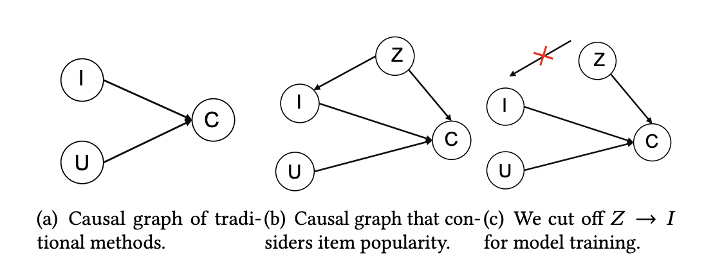

Causal Inference in Recommender System: Manipulating Popularity Bias
The widespread use of recommender systems across various platforms has introduced a pervasive challenge - popularity bias. This bias overshadows personalized selections and limits the diversity of recommendation systems, as they tend to prioritize widely popular items, hindering the discovery of unpopular content that may better align with individual user preferences.
Introduction
Popularity bias serves as a confounding factor in item and user interactions. Traditional algorithms often lean towards promoting popular items for profit, or overlook the significance of popularity, resulting in an imbalanced promotion of trending items. As a result, the content recommended to users often reflects prevailing trends more than their interests. This biased prioritization fosters a self-reinforcing loop, where popular items continue to be promoted.
To address popularity bias, we use the causal inference approach to de-bias user history data. We implemented two models, the Popularity-bias De-confounding and Adjusted model (PDA), and the Disentangling Interest and Conformity with causal Embeddings model (DICE) to produce more personalized recommendations. The two models introduce different logic behind manipulating the popularity bias, and we will discuss the details in the Methodology section.
We found that instead of completely removing the popularity bias, incorporating the bias in the algorithms performs better results, ie. achieving higher recall rates.
Conventional Recommender Systems
Recommender Systems are widely utilized in various online platforms such as personalized shopping recommendations, streaming platforms, and social media advertisements. These platforms employ the systems to match users to their potential preferences. Existing recommendation systems are divided into two categories, collaborative filtering(CF) and content-based recommendation(CTR). CF extracts the user preference based on users’ historical behaviors in which algorithms conduct similarities between users and items from historical interactions. CTR prediction takes advantage of high-order features of users, items, or context, to feed into neural networks. These traditional popular systems, although they involve high-level deep learning techniques, focus on correlations in data rather than causality, which is not induced by the former.
Here, our project borrowed ideas from ZHANG and ZHENG’s papers to integrate causal inference into recommendation systems, which enhance the accuracy and interpretability of personalized suggestions. These two proposed models, rooted in causal reasoning, provide a valuable framework for other recommender algorithms.
Causal Inference
Let’s take a look at the popularity bias under causal relationships.
In Figure 1(a), the traditional recommendation methods take user information (U node) and item information (I node) to account for the interaction, namely click (C node). This relationship form, I -> C and U -> C, is called the collider effect, that U and I are independent of each other, but both contribute to C.
However, in reality, a third factor, popularity (Z node) affects the interaction (C node) and the item information (I node). This Z variable is called a confounder, shown in Figure 1(b). To be specific, people have a conformity mentality that tends to follow the majority to choose purchase (Z -> C). So the more popular the items are, the more likely people will interact with them. On the other hand, recommender models tend to inherit the bias in the data to expose popular items more frequently (Z -> I -> C), which further exacerbates the popularity bias. The popularity (Z) that existed in the second path is a bias amplification and we want to remove or control the strength of it. 
Figure 1: Causal Relationship Between Popularity and User Click
Data Processing
Methodology
PDA
- Causal inference offers a solution to de-bias user behavior data and removes the influence of popularity, allowing recommendation systems to provide more equitable and unbiased suggestions. The predictive model is \( P(Z \vert \text{do}(U, I)) \), where "do" means intervention.
- In the PD model, we completely remove popularity bias. We use \( ELU(f(u,i)) \), a user-item matching score, to indicate \( P(Z \vert \text{do}(U, I)) \), the probability of user behavior given user and item information.
- In the PDA model, we control the strength of popularity bias, which is a parameter \( \gamma \). We use \( ELU(f(u,i))*m_i^{\gamma} \) to estimate \( P(C \vert \text{do}(U, I), \text{do}(Z)) \), the probability of user behavior by intervening user & item and the popularity bias. Here \( m_i \) is the popularity value of \( Z=z \).
- Then we optimize the BPR loss function to train the model.
</body> </html> Figure 2: PDA model task flow
### DICE- The DICE model separates user interest (same idea as U in PDA) and conformity (same idea as Z in PDA) embeddings, from which popularity bias is considered as a cause of user behavior.
- The DICE methodology is a framework for disentangling user and item embeddings, which can be incorporated into other recommender models.
- We separate dataset \( O \) to two cause-specific datasets. \( O_1 \) is conformity-caused data, and \( O_2 \) is interest-caused data.
- We learn user and item embeddings separately in \( O_1 \) and \( O_2 \). Then we concatenate two embeddings to estimate clicks, ie. user behavior.
- Adopting multi-task curriculum learning, the final loss function is \[ L = L_{\text{click}}^{O_1 + O_2} + \alpha \cdot (L_{\text{interest}}^{O_2} + L_{\text{conformity}}^{O_1 + O_2}) + \beta \cdot L_{\text{discrepancy}} \]
Figure 3: DICE model task flow
## Result new page ## Application & Concern ## Reference - [Zhang, Yang, Fuli Feng, Xiangnan He, Tianxin Wei, Chonggang Song, Guohui Ling, and Yongdong Zhang.2021. “Causal intervention for leveraging popularity bias in recommendation.” In Proceedings of the 44th International ACM SIGIR Conference on Research and Development in Information Retrieval.](https://arxiv.org/pdf/2105.06067.pdf) - [Yu Zheng, Chen Gao, Xiang Li, Xiangnan He, Depeng Jin, Yong Li. 2021. Disentangling User Interest and Conformity for Recommendation with Causal Embedding. In Proceedings of the Web Conference 2021.](https://arxiv.org/pdf/2006.11011.pdf)